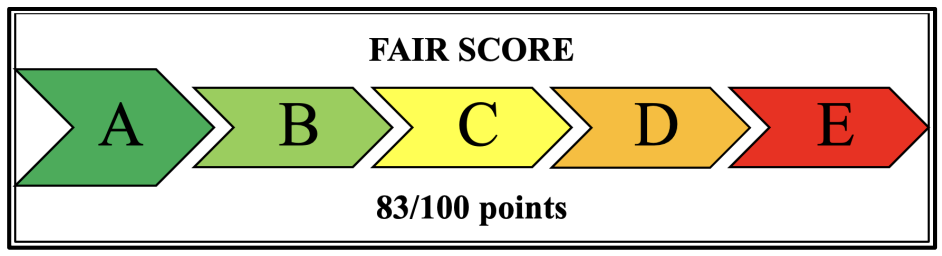

Origins of the Fair Score Framework.
The Fair Score Framework is based on academic research examining value chain fairness. It was developed to provide a practical, structured tool for assessing fairness in real‑world contexts.
One of the original Fair Score label examples used during the early development of the Framework is shown below.

For any questions about the Framework, please use the contact page.
Next: Contact →